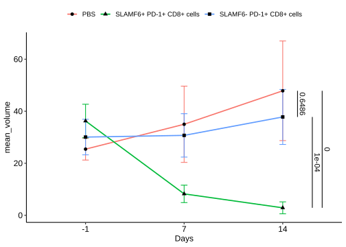

1 折线图
Code
f4h <-read_excel("data/01source.xlsx", sheet = "Fig.4", range = "A20:P23")
#> New names:
#> • `` -> `...3`
#> • `` -> `...4`
#> • `` -> `...5`
#> • `` -> `...6`
#> • `` -> `...8`
#> • `` -> `...9`
#> • `` -> `...10`
#> • `` -> `...11`
#> • `` -> `...13`
#> • `` -> `...14`
#> • `` -> `...15`
#> • `` -> `...16`
colnames(f4h) <-
c("Days", rep(
c("PBS", "SLAMF6+ PD-1+ CD8+ cells", "SLAMF6- PD-1+ CD8+ cells"),
each = 5
))
f4h |> pivot_longer(cols = -1,
names_to = "method",
values_to = "volume",) |>
dplyr::mutate(id=factor(rep(1:15,3)),
Days = factor(Days, levels = c("-1", "7", "14")),
method = factor(
method,
levels = c("PBS", "SLAMF6+ PD-1+ CD8+ cells",
"SLAMF6- PD-1+ CD8+ cells")
)) -> f4h
f4h
#> # A tibble: 45 × 4
#> Days method volume id
#> <fct> <fct> <dbl> <fct>
#> 1 -1 PBS 19.2 1
#> 2 -1 PBS 27.0 2
#> 3 -1 PBS 23.4 3
#> 4 -1 PBS 27.9 4
#> 5 -1 PBS 29.7 5
#> 6 -1 SLAMF6+ PD-1+ CD8+ cells 31.9 6
#> 7 -1 SLAMF6+ PD-1+ CD8+ cells 34.5 7
#> 8 -1 SLAMF6+ PD-1+ CD8+ cells 44.4 8
#> 9 -1 SLAMF6+ PD-1+ CD8+ cells 29.1 9
#> 10 -1 SLAMF6+ PD-1+ CD8+ cells 41.4 10
#> # ℹ 35 more rows统计p值
Code
# 重复测量方差设计
library(nlme)
model <- lme(volume ~ method*Days, random = ~1|id/Days, data = f4h)
summary(model)
#> Linear mixed-effects model fit by REML
#> Data: f4h
#> AIC BIC logLik
#> 305.8048 324.8071 -140.9024
#>
#> Random effects:
#> Formula: ~1 | id
#> (Intercept)
#> StdDev: 6.775335
#>
#> Formula: ~1 | Days %in% id
#> (Intercept) Residual
#> StdDev: 6.775335 2.540755
#>
#> Fixed effects: volume ~ method * Days
#> Value Std.Error DF t-value p-value
#> (Intercept) 25.43718 4.433188 36 5.737899 0.0000
#> methodSLAMF6+ PD-1+ CD8+ cells 10.81993 6.269474 36 1.725812 0.0930
#> methodSLAMF6- PD-1+ CD8+ cells 4.63341 6.269474 36 0.739043 0.4647
#> Days7 9.55505 6.269474 36 1.524059 0.1362
#> Days14 22.41864 6.269474 36 3.575841 0.0010
#> methodSLAMF6+ PD-1+ CD8+ cells:Days7 -37.58056 8.866375 36 -4.238549 0.0001
#> methodSLAMF6- PD-1+ CD8+ cells:Days7 -8.90525 8.866375 36 -1.004384 0.3219
#> methodSLAMF6+ PD-1+ CD8+ cells:Days14 -55.79891 8.866375 36 -6.293316 0.0000
#> methodSLAMF6- PD-1+ CD8+ cells:Days14 -14.68420 8.866375 36 -1.656167 0.1064
#> Correlation:
#> (Intr) mtSLAMF6+PD-1+CD8+c
#> methodSLAMF6+ PD-1+ CD8+ cells -0.707
#> methodSLAMF6- PD-1+ CD8+ cells -0.707 0.500
#> Days7 -0.707 0.500
#> Days14 -0.707 0.500
#> methodSLAMF6+ PD-1+ CD8+ cells:Days7 0.500 -0.707
#> methodSLAMF6- PD-1+ CD8+ cells:Days7 0.500 -0.354
#> methodSLAMF6+ PD-1+ CD8+ cells:Days14 0.500 -0.707
#> methodSLAMF6- PD-1+ CD8+ cells:Days14 0.500 -0.354
#> mtSLAMF6-PD-1+CD8+c Days7 Days14
#> methodSLAMF6+ PD-1+ CD8+ cells
#> methodSLAMF6- PD-1+ CD8+ cells
#> Days7 0.500
#> Days14 0.500 0.500
#> methodSLAMF6+ PD-1+ CD8+ cells:Days7 -0.354 -0.707 -0.354
#> methodSLAMF6- PD-1+ CD8+ cells:Days7 -0.707 -0.707 -0.354
#> methodSLAMF6+ PD-1+ CD8+ cells:Days14 -0.354 -0.354 -0.707
#> methodSLAMF6- PD-1+ CD8+ cells:Days14 -0.707 -0.354 -0.707
#> mSLAMF6+PD-1+CD8+c:D7
#> methodSLAMF6+ PD-1+ CD8+ cells
#> methodSLAMF6- PD-1+ CD8+ cells
#> Days7
#> Days14
#> methodSLAMF6+ PD-1+ CD8+ cells:Days7
#> methodSLAMF6- PD-1+ CD8+ cells:Days7 0.500
#> methodSLAMF6+ PD-1+ CD8+ cells:Days14 0.500
#> methodSLAMF6- PD-1+ CD8+ cells:Days14 0.250
#> mSLAMF6-PD-1+CD8+c:D7
#> methodSLAMF6+ PD-1+ CD8+ cells
#> methodSLAMF6- PD-1+ CD8+ cells
#> Days7
#> Days14
#> methodSLAMF6+ PD-1+ CD8+ cells:Days7
#> methodSLAMF6- PD-1+ CD8+ cells:Days7
#> methodSLAMF6+ PD-1+ CD8+ cells:Days14 0.250
#> methodSLAMF6- PD-1+ CD8+ cells:Days14 0.500
#> mSLAMF6+PD-1+CD8+c:D1
#> methodSLAMF6+ PD-1+ CD8+ cells
#> methodSLAMF6- PD-1+ CD8+ cells
#> Days7
#> Days14
#> methodSLAMF6+ PD-1+ CD8+ cells:Days7
#> methodSLAMF6- PD-1+ CD8+ cells:Days7
#> methodSLAMF6+ PD-1+ CD8+ cells:Days14
#> methodSLAMF6- PD-1+ CD8+ cells:Days14 0.500
#>
#> Standardized Within-Group Residuals:
#> Min Q1 Med Q3 Max
#> -0.54102103 -0.09310952 -0.02293325 0.11100673 0.62463379
#>
#> Number of Observations: 45
#> Number of Groups:
#> id Days %in% id
#> 45 45
df_aov <- anova(model)
df_aov
#> numDF denDF F-value p-value
#> (Intercept) 1 36 365.4570 <.0001
#> method 2 36 18.1753 <.0001
#> Days 2 36 1.5292 0.2305
#> method:Days 4 36 11.1001 <.0001
#成对比较
library(emmeans)
#> Welcome to emmeans.
#> Caution: You lose important information if you filter this package's results.
#> See '? untidy'
method_means <- emmeans(model, ~method)
#> NOTE: Results may be misleading due to involvement in interactions
print(method_means)
#> method emmean SE df lower.CL upper.CL
#> PBS 36.1 2.56 36 30.9 41.3
#> SLAMF6+ PD-1+ CD8+ cells 15.8 2.56 36 10.6 21.0
#> SLAMF6- PD-1+ CD8+ cells 32.9 2.56 36 27.7 38.1
#>
#> Results are averaged over the levels of: Days
#> Degrees-of-freedom method: containment
#> Confidence level used: 0.95
method_comparisons <- pairs(method_means)
method_comparisons
#> contrast estimate SE df
#> PBS - (SLAMF6+ PD-1+ CD8+ cells) 20.31 3.62 36
#> PBS - (SLAMF6- PD-1+ CD8+ cells) 3.23 3.62 36
#> (SLAMF6+ PD-1+ CD8+ cells) - (SLAMF6- PD-1+ CD8+ cells) -17.08 3.62 36
#> t.ratio p.value
#> 5.610 <.0001
#> 0.892 0.6486
#> -4.718 0.0001
#>
#> Results are averaged over the levels of: Days
#> Degrees-of-freedom method: containment
#> P value adjustment: tukey method for comparing a family of 3 estimates2 ggplot2
Code
pvalue <- method_comparisons |> broom::tidy() |>
dplyr::select(contrast, adj.p.value) |>
dplyr::mutate(padj=round(adj.p.value,digits = 4),
p_adj_sci=format(adj.p.value,scientific = T,digits = 4))
pvalue
#> # A tibble: 3 × 4
#> contrast adj.p.value padj p_adj_sci
#> <chr> <dbl> <dbl> <chr>
#> 1 PBS - (SLAMF6+ PD-1+ CD8+ cells) 0.00000680 0 6.796e-06
#> 2 PBS - (SLAMF6- PD-1+ CD8+ cells) 0.649 0.649 6.486e-01
#> 3 (SLAMF6+ PD-1+ CD8+ cells) - (SLAMF6- PD-1+ CD8+… 0.000103 0.0001 1.032e-04
p <- f4h |> summarise(
mean_volume = mean(volume),
sd = sd(volume),
.by = c(Days, method),) |>
ggplot(aes(
x = Days,
y = mean_volume,
color = method,
group = method,)) +
geom_errorbar(
aes(ymin = mean_volume - sd, ymax = mean_volume + sd),
position = position_dodge(0),
width = .2,
linewidth = 0.5,
) +
geom_line(position = position_dodge(0),
linewidth = 0.8) +
geom_point(
aes(shape = method),
position = position_dodge(0),
color = "black",
size = 2) +
theme_pubr() +
theme(legend.title = element_blank())
# 使用ggplot_build()获取图层数据
plot_data <- ggplot_build(p)
# 查看X轴的数值坐标
plot_data$data
#> [[1]]
#> colour ymin ymax x y group PANEL flipped_aes xmin
#> 1 #F8766D 21.2341315 29.640231 1 25.437181 1 1 FALSE 0.9666667
#> 2 #00BA38 29.8251093 42.689121 1 36.257115 2 1 FALSE 0.9666667
#> 3 #619CFF 23.2386460 36.902540 1 30.070593 3 1 FALSE 0.9666667
#> 4 #F8766D 20.3358912 49.648564 2 34.992228 1 1 FALSE 1.9666667
#> 5 #00BA38 4.8856152 11.577581 2 8.231598 2 1 FALSE 1.9666667
#> 6 #619CFF 22.3836755 39.057109 2 30.720392 3 1 FALSE 1.9666667
#> 7 #F8766D 28.7160676 66.995581 3 47.855824 1 1 FALSE 2.9666667
#> 8 #00BA38 0.5880804 5.165626 3 2.876853 2 1 FALSE 2.9666667
#> 9 #619CFF 27.2406302 48.369439 3 37.805035 3 1 FALSE 2.9666667
#> xmax linewidth linetype width alpha
#> 1 1.033333 0.5 1 0.2 NA
#> 2 1.033333 0.5 1 0.2 NA
#> 3 1.033333 0.5 1 0.2 NA
#> 4 2.033333 0.5 1 0.2 NA
#> 5 2.033333 0.5 1 0.2 NA
#> 6 2.033333 0.5 1 0.2 NA
#> 7 3.033333 0.5 1 0.2 NA
#> 8 3.033333 0.5 1 0.2 NA
#> 9 3.033333 0.5 1 0.2 NA
#>
#> [[2]]
#> colour x y group PANEL flipped_aes xmin xmax ymax linewidth
#> 1 #F8766D 1 25.437181 1 1 FALSE 1 1 25.437181 0.8
#> 2 #F8766D 2 34.992228 1 1 FALSE 2 2 34.992228 0.8
#> 3 #F8766D 3 47.855824 1 1 FALSE 3 3 47.855824 0.8
#> 4 #00BA38 1 36.257115 2 1 FALSE 1 1 36.257115 0.8
#> 5 #00BA38 2 8.231598 2 1 FALSE 2 2 8.231598 0.8
#> 6 #00BA38 3 2.876853 2 1 FALSE 3 3 2.876853 0.8
#> 7 #619CFF 1 30.070593 3 1 FALSE 1 1 30.070593 0.8
#> 8 #619CFF 2 30.720392 3 1 FALSE 2 2 30.720392 0.8
#> 9 #619CFF 3 37.805035 3 1 FALSE 3 3 37.805035 0.8
#> linetype alpha
#> 1 1 NA
#> 2 1 NA
#> 3 1 NA
#> 4 1 NA
#> 5 1 NA
#> 6 1 NA
#> 7 1 NA
#> 8 1 NA
#> 9 1 NA
#>
#> [[3]]
#> shape x y group PANEL xmin xmax ymax colour size fill alpha
#> 1 16 1 25.437181 1 1 1 1 25.437181 black 2 NA NA
#> 2 17 1 36.257115 2 1 1 1 36.257115 black 2 NA NA
#> 3 15 1 30.070593 3 1 1 1 30.070593 black 2 NA NA
#> 4 16 2 34.992228 1 1 2 2 34.992228 black 2 NA NA
#> 5 17 2 8.231598 2 1 2 2 8.231598 black 2 NA NA
#> 6 15 2 30.720392 3 1 2 2 30.720392 black 2 NA NA
#> 7 16 3 47.855824 1 1 3 3 47.855824 black 2 NA NA
#> 8 17 3 2.876853 2 1 3 3 2.876853 black 2 NA NA
#> 9 15 3 37.805035 3 1 3 3 37.805035 black 2 NA NA
#> stroke
#> 1 0.5
#> 2 0.5
#> 3 0.5
#> 4 0.5
#> 5 0.5
#> 6 0.5
#> 7 0.5
#> 8 0.5
#> 9 0.5
p + annotate(geom = "segment",
x = 3.4,
y = 47.855824,
yend = 2.876853,) + annotate(
geom = "text",
x = 3.45,
y = (47.855824 + 2.876853) / 2,
angle = 270,
label = pvalue$padj[1],
) +
annotate(geom = "segment",
x = 3.15,
y = 47.855824,
yend = 37.805035,) + annotate(
geom = "text",
x = 3.2,
y = (47.855824 + 37.805035) / 2,
angle = 270,
label = pvalue$padj[2],
) +
annotate(geom = "segment",
x = 3.3,
y = 2.876853,
yend = 37.805035,) + annotate(
geom = "text",
x = 3.35,
y = (2.876853 + 37.805035) / 2,
angle = 270,
label = pvalue$padj[3],
)
Code
#y=c(47.855824,37.805035,2.876853,),
#yend = c(2.876853,47.855824,37.805035,),3 ggpubr
Code

Code
# Add p-values onto the line plots
# Remove brackets using linetype = "blank"
stat.test <- stat.test %>%
add_xy_position(fun = "mean_sd", x = "dose")
lp + stat_pvalue_manual(stat.test,
label = "p.adj.signif",
tip.length = 0,
linetype = "blank")